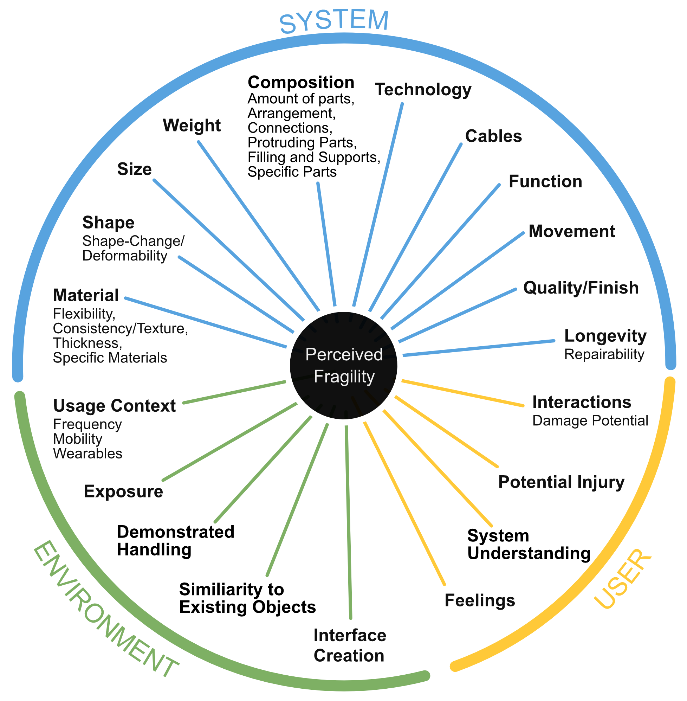
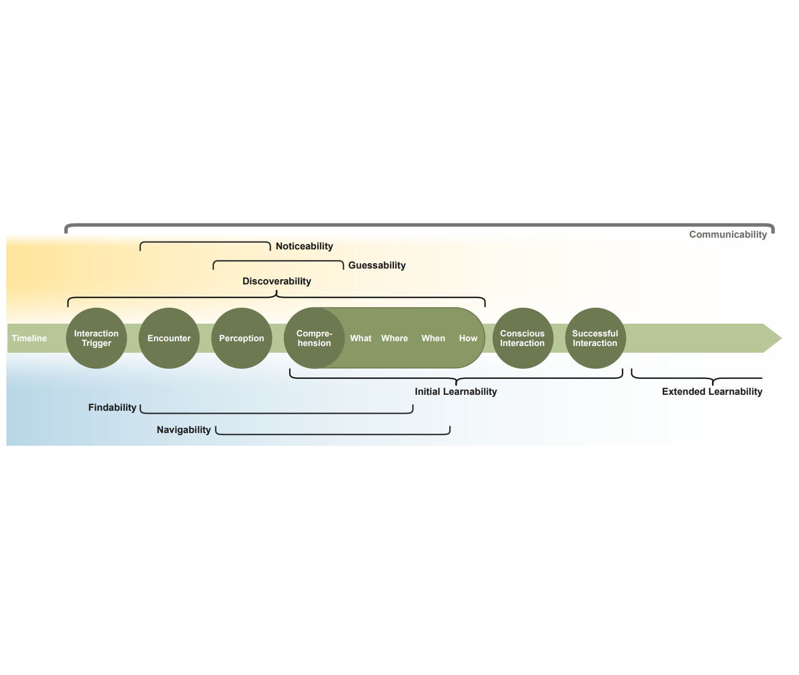
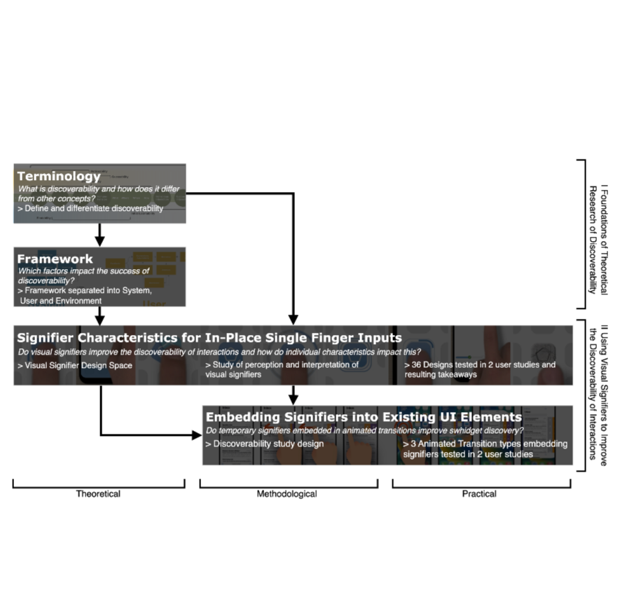
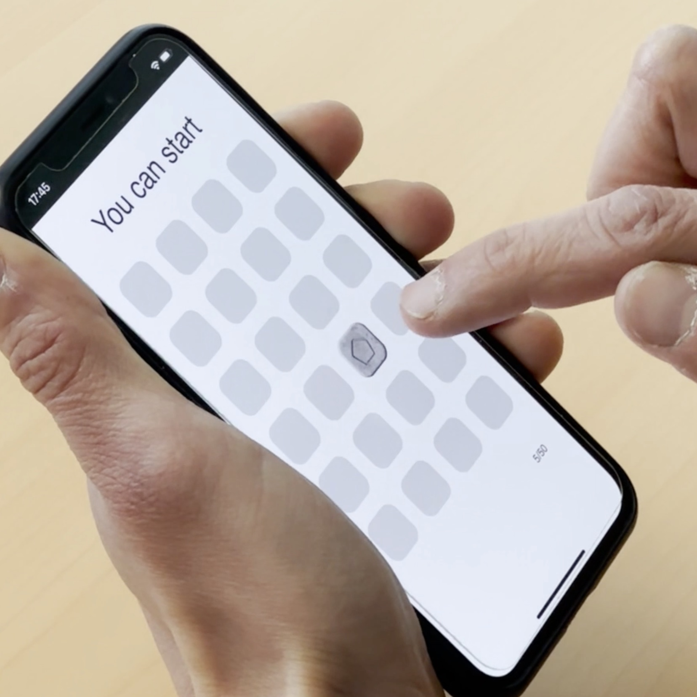
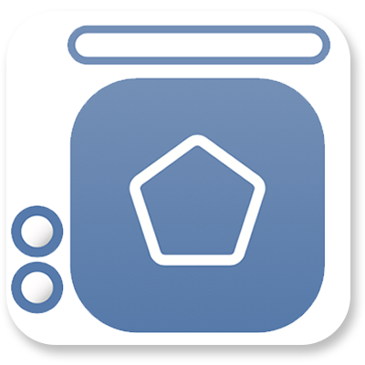

Hey, I’m Eva! My research interests are in human-computer interaction (HCI). In particular I am interested in user perception and interpretation of interfaces and their affordances as well as how this translates to discoverability and learnability.
I am currently working as a postdoc with Parmit Chilana in the ixLab at Simon Fraser University.
Previously, I have worked with Céline Coutrix in the IIHM team of the Laboratoire d’Informatique de Grenoble at Université Grenoble Alpes on the perception of Shape-Changing Interfaces. My PhD focused on “Investigating the Influence of Visual Signifiers to Foster the Discovery of Touch-Based Interactions”, under the supervision of Sylvain Malacria and Géry Casiez at Inria de l’Université de Lille as part of the LOKI group.
Get in touch via emackamu@sfu.ca




